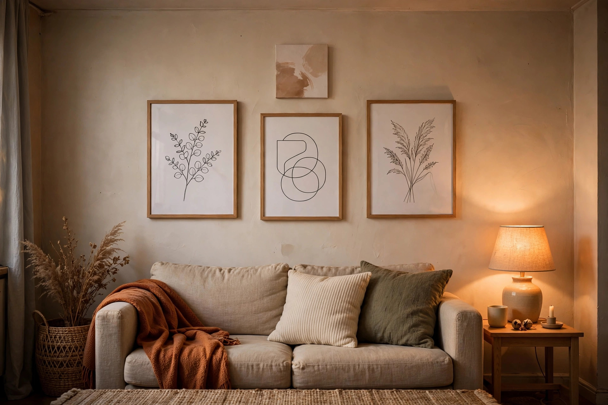

Budget Decor & DIY
Budget Wall Art Ideas for a Small Apartment Under $20
Intro
Blank walls make a small flat feel unfinished, but framed art from a shop can cost more than the furniture underneath it. The good news is that wall art is one of the cheapest things to make look expensive: a good print in a simple frame, a piece of fabric stretched over a board, or a page from an old book can fill a wall for under $20 — and in a small room, one well-placed piece does more than a whole gallery of clutter.
This guide has 12 budget wall art ideas for a small apartment — prints, frames, fabric and free printable-style art, each under $20. Start with the wall you see first when you walk in, and let one piece set the mood for the room.

1. One large print in a cheap frame — $12–$18
One large print beats five small ones in a small room. Print a favourite photo or a free landscape image at A3 size at a copy shop for about $5, and put it in a simple black frame for about $10. Hang it at eye level — the centre of the picture about 145 cm from the floor — above the sofa or the bed. A single large piece makes the wall feel intentional, and the room feel bigger, because the eye has one place to rest.
2. Free printable art from the internet — $0–$5
Hundreds of artists and museums share free printable art online — botanical prints, vintage maps, abstract shapes. Download one, print it at home or at a copy shop for a few dollars, and frame it in a frame you already own. Choose art with the colours already in your room, so it looks chosen rather than random. Free does not have to look free: a white mount made from a sheet of card around the print makes it look gallery-ready.
3. Fabric as wall art — $8–$15
A metre of patterned fabric stretched over a canvas frame or a piece of board is wall art for about $10, and it adds texture a flat print cannot. Choose a fabric with a bold pattern — a geometric print, a floral, a stripe — and staple it tightly to the back of the board. Fabric art also softens echo in a small, hard-floored flat. When you get bored of it, swap the fabric, not the frame, and the wall gets a new look for the price of a metre of cloth.
4. A page from an old book or magazine — $0–$5
A beautiful page torn from an old book, a vintage magazine or a charity-shop atlas makes striking wall art for free. Frame a map page, a botanical illustration or a black-and-white photograph, and hang it alone or in a pair. Old paper has a warmth new prints do not, and in a small room one framed page looks like a deliberate choice, not a leftover. Check charity shops for old books with good illustrations — they often cost under $2.
5. Your own photos, printed big — $5–$10
The cheapest art you own is already on your phone. Print your three best photos — a holiday view, a city street, a friend laughing — at A4 or A3 size for about $2 each, and hang them in matching frames. Photos you took yourself mean more than any shop print, and guests always ask about them. Print in black and white for a calm, matching set, even if the originals are in colour.
6. Washi tape frames, no nails needed — $3–$6
For renters who cannot drill, washi tape is a frame. Tape a rectangle of coloured or patterned tape around a print, a postcard or a photo, directly on the wall — it peels off without damage and costs about $4 a roll. Use one colour for a calm look, or mix two for a playful one. Washi frames are also the easiest way to try a layout before committing to nails: move the tape, move the art, no holes left behind.
7. A thrift-shop frame with new art inside — $5–$10
Charity shops sell framed pictures for a few dollars, and the frame is often worth more than the picture. Buy the frame, take out the old print, and put your own art inside. A solid wood frame for $5, painted white or black, looks like a $30 frame. Check the glass for scratches and the corners for damage before you buy, and measure the opening so your print fits without trimming.
8. A small shelf as a picture ledge — $10–$15
A narrow picture ledge — a shelf about 8 cm deep — lets you lean art against the wall instead of hanging it, so you can swap pieces without new holes. One ledge costs about $12 and holds three or four small frames. Lean a print, a postcard and a small photo together, overlapping slightly, for a layered look. A ledge above a desk or a bed is the easiest gallery wall in a rental, because nothing is fixed to the wall at all.
9. Postcards as a mini gallery — $5–$8
Six postcards in a row, evenly spaced, make a gallery wall for the price of the cards. Buy postcards from museums, markets or holiday shops for about $1 each, and tape or pin them in a straight line or a neat grid. Postcards are small, so they suit the narrow wall beside a door or the strip of wall above a desk — the walls in a small flat that are too narrow for a big frame. Keep the spacing equal, and the row will look deliberate.
10. Painted canvas from a pound shop — $5–$10
A blank canvas and a small set of acrylic paints cost about $8, and even a simple painted shape — a circle, a horizon line, a block of colour — looks like modern art once it is on the wall. You do not need to be an artist: paint the canvas one solid colour, add one contrasting shape, and stop. Abstract art forgives everything, and a piece you painted yourself is the one thing in the flat no one else has.
11. A calendar page as seasonal art — $0–$3
A beautiful calendar page is free art that changes with the seasons. Frame the current month's image, and swap it when the month changes — the wall gets a new picture twelve times a year for the price of one calendar. Choose a calendar with landscapes, architecture or botanicals, and frame the page in a simple frame you reuse all year. It is the cheapest rotating gallery a small flat can have.
12. One statement piece, nothing else on that wall — $0
The cheapest idea costs nothing: take everything off one wall except a single piece, and let it breathe. A small room looks bigger when one wall is calm, and a single picture on an empty wall looks more expensive than five pictures crowded together. Remove the extra frames, the small prints and the clutter, and keep only the piece you love most. In a small flat, empty wall space is part of the art.
Conclusion
Budget wall art is not about buying cheap pictures — it is about choosing one good piece, framing it simply, and giving it space. A large print, a piece of fabric or a photo you took yourself can fill a wall for under $20 and make the whole room feel finished. Start with the wall you see first, hang one piece at eye level, and leave the rest of the wall alone.
Budget recap
- Large print + frame: ~$15 - Fabric art on a board: ~$10 - Postcard gallery (6 cards): ~$6
Total for one finished wall: ~$10–$20 — or $0 with a calendar page or a print you already own.
Pinterest pin titles
- Budget Wall Art Ideas for a Small Apartment Under $20
- 12 Wall Art Ideas Under $20 That Look Expensive
- Blank Walls? 12 Cheap Art Ideas for Tiny Flats